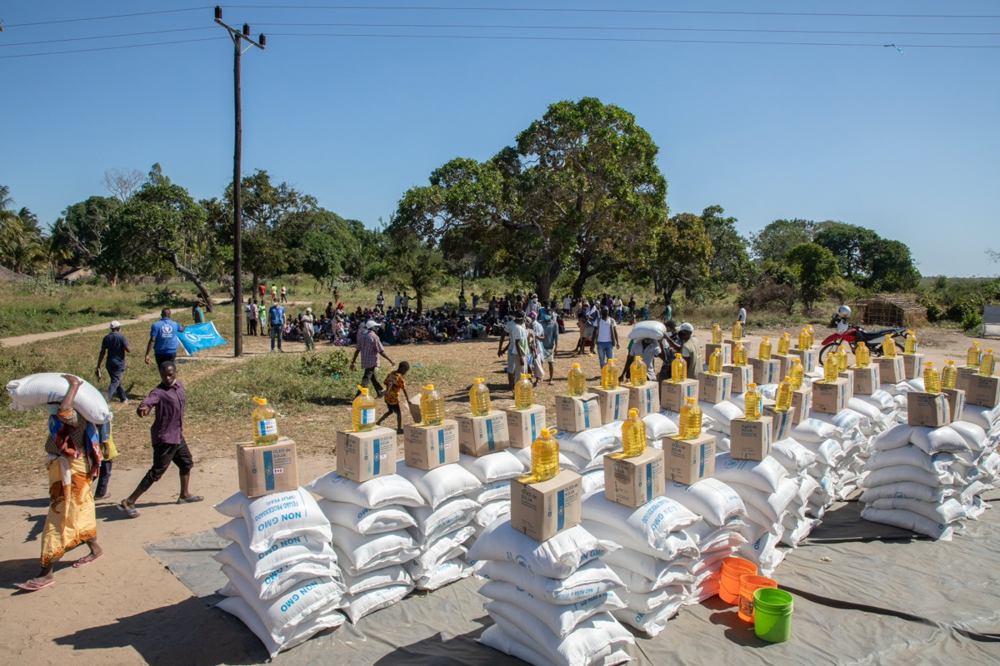
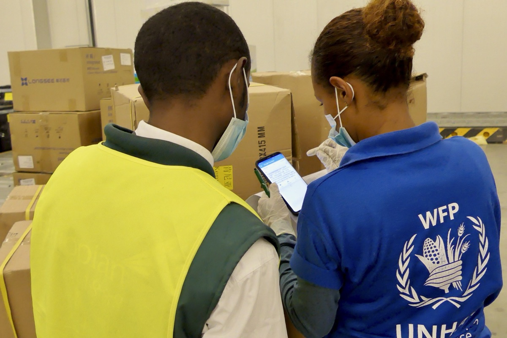

Palantir影响力 | 与世界粮食计划署共同提供拯救生命的援助
利用数据提供拯救生命的援助
在前线

图片来源：世界粮食计划署
世界粮食计划署（WFP）运作着地球上最复杂、影响最深远的供应链之一——每年部署数以千计的卡车、飞机和船只，向超过 1 亿人提供拯救生命的援助。
为实现“零饥饿”的目标，世界粮食计划署深入世界上最偏远角落，应对各种紧急状况。
从自然灾害到饥荒再到冲突，世界粮食计划署始终在前线为最需要帮助的人提供援助。
数据发挥作用
当每一分钟都可能决定生死，世界粮食计划署必须确保全组织人员都能掌握正确的数据，以便尽快做出明智的决策。
自 2019 年起，世界粮食计划署与 Palantir 合作，将现有诸多系统整合到一个名为 DOTS 的协同运营平台中，使员工能够快速获取所需信息，提前预判瓶颈，并寻找替代方案以保障物资的持续运送。
DOTS 还促进了团队成员做出更好的决策。每次外勤人员在 DOTS 中解决物流问题时，该决策都会回写到底层通用数据资产中，帮助优化未来的物流工作。
“我们内部有一句话：‘任何事物都不能阻挡在世界粮食计划署与饥饿儿童之间。’这就是我们借助数据力量的原因。得益于 DOTS 的力量，我们的组织将变得更加智能、更快速，对我们所服务社区的需求响应更及时。”
↳ Pierre Guillaume Wielezynski，世界粮食计划署数字化转型服务负责人
抗击 COVID-19

图片来源：世界粮食计划署
当 COVID-19 爆发时，全球范围内的企业和供应链均陷入停摆——但世界粮食计划署却扩大了行动规模。
根据联合国的《COVID-19 全球人道主义应对计划》，全球各地的人道主义机构利用世界粮食计划署的供应链，运送应急医疗和人道主义援助物资。
借助 DOTS 的“控制塔”模块，世界粮食计划署能够实时追踪并更新这些货物信息，代表 72 个组织向 173 个国家运送了超过 14.8 万立方米的拯救生命的医疗和人道主义货物以应对疫情，并节省了 3000 万美元的运营成本。
2021 年，世界粮食计划署因利用分析和数据改善应急食品援助，荣获 2021 年运筹学和管理学研究协会 Edelman 奖。
联系我们
业务现已覆盖全球 40 多个行业和领域。
世界粮食计划署不认可任何产品或服务。